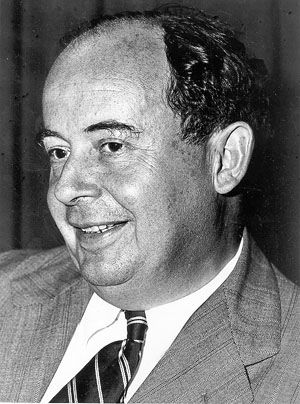

Origines
D'où vient cette architecture ..?

Le modèle (architecture) de Von Neumann
L'architecture dite architecture de Von Neumann est un modèle pour un ordinateur
qui utilise une strucutre de stockage unique pour conserver à la fois les instructions et les données demandés
ou produites par le calcul. De telles machines sont aussi connues sous le nom d'ordinateur à programme enregistré.
La séparation entre le stockage et le processeur est implicite dans ce modèle.
Cette architecture est appelée ainsi en référence au mathématicien John Von Neumann, qui a élaboré en Juin 1945 dans le
cadre dun projet EDVAC, la première description d'un ordinateur dont le programme est stocké dans sa mémoire.
Allan Turing, John William Mauchly et John Eckert (pendant leur travaux sur L'ENIAC) ont également utilisé ce concept
ou une idée proche, et ce indépendamment de Von Neumann.
Herman Glodstine (un collègue de John Von Neumann) fit circuler une description inachevée, intitulée "Première ébauche
d'un rapport sur EDVAC", basée sur les travaux d'Eckert et Mauchly, sous le nom de Von Neumann.
Le document a été lu par des dizaines de collègues de Von Neumann en Amérique et en Europe, et a inspiré plusieurs
machines en conctruction.
L'architecture de Von Neumann décompose l'ordinateur en 4 parties distinctes :
1 - L'unité arithmétique et logique (UAL ou ALU en anglais) ou unité de traitement : son rôle est d'effectuer les opérations de base.
2- L'unité de contrôle, chargée du "séquençage" des opérations.
3 - La mémoire qui contient à la fois les données et le programme qui indiquera à l'unité de contrôle quels sont les calculs à faire
sur ces données. La mémoire se divise entre mémoire volatile (programmes et données en cours de fonctionnement) et mémoire permanente (programmes et données de base de la machine).
4 - Les dispositifs d'entrée-sortie, qui permettent de communiquer avec le monde extérieur.
En traitant les instructions de la même façon que les données, un ordinateur qui a un programme stocké en
mémoire peut facilement modifier les instructions. Une raison importante ayant induit une telle possibilité était le besoin
pour un programme d’incrémenter ou modifier le champ adresse des instructions (pour faire des boucles par exemple).
Cette raison est devenue moins importante avec l'apparition de l’utilisation de registres d’index et de l’adressage indirect
en tant que caractéristique standard des processeurs.
L’architecture actuelle des ordinateurs rend inutile la modification à faible échelle des instructions du programme
— son « code » — car cela rendrait inefficaces les techniques de gestion de l’antémémoire et du pipeline dans le processeur.
Cette pratique est donc à ce jour obsolète. Bien sûr, à une plus grande échelle, la possibilité de traiter des instructions de
la même manière que des données est ce qui permet l’écriture de compilateurs. C’est aussi une caractéristique exploitée par les
virus lorsqu’ils ajoutent une copie de leur propre code dans un programme existant. Le problème de la copie de code non
autorisée peut être évité par l’utilisation d’un système de protection de la mémoire et, en particulier, par le gestionnaire
de la mémoire virtuelle.